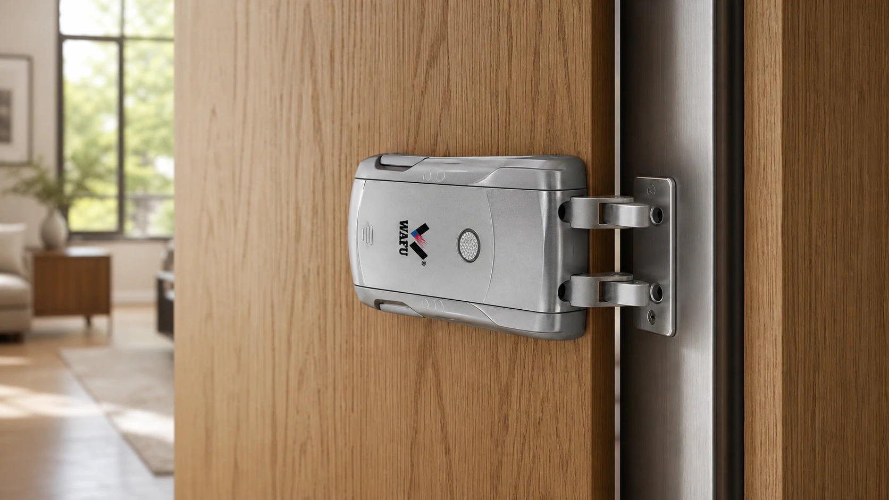
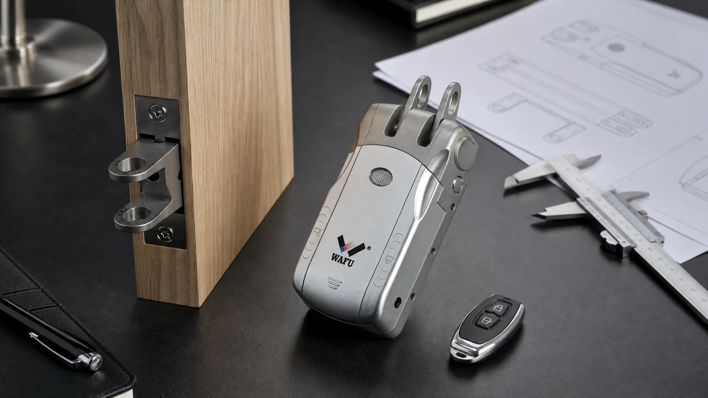

旧门改造项目里，最晚暴露的问题往往不是“锁能不能装得上”，而是门边没有足够空间、原锁体留下的孔位无法处理，或施工队拿到货后才发现开向与扣板不匹配。隐形智能锁适合把门面做得更简洁，但它并不会替代现场勘测。采购方先把门体和交付边界看清，样品才有意义。
一、先分清：新门、旧门与局部翻新
项目名称里都可能写着“安装智能锁”，现场条件却完全不同。新门项目可以在门厂阶段预留锁体和走线位置；旧门改造受已有孔位、门边结构和现场工期限制；局部翻新则要处理原门面修补、色差、住户出入和分批施工。把三类项目混在一起询价，供应商只能给出笼统答复，采购团队也很难比较方案。
改造前先问一个现实的问题：如果这把锁不适配，现场是可以换锁体、补门边，还是只能换方案？这个答案决定了样品验证应花多少时间，也决定了项目应优先选择外观策略、授权方式还是施工容错。
| 项目类型 | 先确认的事项 | 不宜在报价后才追问的事项 |
|---|---|---|
| 新门项目 | 门厂图纸、门厚、锁体位置、门框与扣板预留。 | 安装工序、样品冻结时间和批量版本。 |
| 存量门改造 | 原锁体尺寸、旧孔位、门边余量、开向与现场修补限制。 | 能否隐藏旧孔、是否需要二次加工、住户施工安排。 |
| 局部翻新 | 门面材质、颜色一致性、分批交付和现场保管方式。 | 每批门的勘测记录、验收责任和变更流程。 |

二、现场勘测不是拍一张门的正面照片
一张正面照能说明门的风格，却回答不了锁体是否放得下。项目方至少要保留门内外两侧、门边、门框扣板、现有锁体和开孔的照片；有条件时附上门扇厚度、锁边宽度、原锁体长度、中心距、把手位置和开门方向。若同一项目存在多种门型，应分别编号，不能拿一扇样门的尺寸代替全部楼层。
勘测表的目的不是让现场人员填写更多字段，而是把“可装”“要改”“待确认”三种状态分开。采购、安装与供应商看到同一张表，才能在样品前发现分歧，而不是把问题留给施工日。
| 勘测对象 | 建议记录 | 它会影响什么 |
|---|---|---|
| 门扇与门框 | 材质、厚度、边框宽度、开向、是否存在变形。 | 锁体位置、扣板配合和施工方式。 |
| 原锁体与孔位 | 锁体尺寸、锁舌方向、孔位位置、旧面板覆盖范围。 | 是否需要修补、转接或更换方案。 |
| 使用环境 | 室内外位置、温湿度、人员流量、交付节奏。 | 维护安排、备件计划和项目验收方式。 |
| 管理方式 | 谁发放权限、谁保管备用开启方式、谁接收故障反馈。 | 遥控配置、交接资料和售后路径。 |
三、原锁体与开孔：最容易返工的环节
旧门项目常见的误判，是只看面板能否遮住旧孔，却忽略门边的锁体空间和锁舌运行路径。原锁体的长度、深度、锁舌位置、方钢高度，以及门框扣板的配合都会影响替换方案。现场若为了赶工强行加大开孔，后续可能出现门边强度下降、外观修补困难或锁舌摩擦增大的问题。
正确的顺序是先测量，再由样品确认实际锁体和施工边界。对于无法获得原锁体图纸的项目，拆下一把典型门锁进行实测通常比反复凭照片猜测更有效。有关批量施工后的验收项目，可继续阅读《批量智能锁项目安装验收清单》。

四、供电、遥控与应急路径要和施工条件一起谈
隐形锁的供电与授权策略不是安装后的附加选项。项目方需要先确认门后是否有合适的电池维护位置、遥控器如何交给住户或管理人员、遗失后如何处理，以及发生低电量或授权异常时由谁到场。不同项目对“用户自行处理”和“物业统一维护”的接受度并不相同。
如果项目涉及多批门、多个安装队或后期由不同物业接管，建议把遥控器编号、门号、样品版本和备用开启方式记录在交接表中。无线配置、实际使用范围和任何联网需求，应以批准样品与项目规格书为准，不能只按网页功能描述判断。
五、WF-010、WF-019、WF-026 如何进入样品筛选
三款型号不应被理解为同一套门体条件下的替代品。WF-010 可作为需要隐藏安装和常规项目沟通的起点；WF-019 更适合把无钥匙孔外观与授权体验放在前面的方案讨论；WF-026 则适合把结构冗余与更高安全关注度一并纳入评审的项目。实际可供配置、锁体、颜色、开锁方式和交期，仍需以样品和双方确认资料为准。
| 项目关注点 | 样品筛选时可优先讨论的型号方向 | 现场还要补齐的证据 |
|---|---|---|
| 门面尽量简洁、希望减少可见锁具元素 | WF-010 或 WF-019 的隐藏安装方案。 | 门扇结构、外观覆盖范围、授权与应急交接。 |
| 需要把多种授权方式带入项目评审 | 以 WF-019 为重点核验使用流程。 | 遥控器管理、用户交接与备用路径。 |
| 对结构冗余和安全侧重更高 | 以 WF-026 的双系统双电机方向进行样品评审。 | 门体承载、维护边界和验收记录。 |
同一项目有多种门型，不能只做一扇样门
公寓楼、办公楼或翻新项目经常出现不同楼层、不同防火等级、不同开向的门。采购方可以先按“门扇结构 + 原锁体 + 门框扣板 + 使用场景”给门分组，再为每一组选择典型门做样品试装。这样既不会把每扇门都重复勘测，也不会因为一把样门安装成功，就默认整批门都能复用同一工艺。
当现场条件不一致时，报价附件应明确哪些门型已经验证、哪些门型仍需确认、变更后由谁复核。这个记录比一句“现场适配”更有用，也能避免施工队自行替换配件或调整安装位置。
六、样品试装和施工交底：把未知问题留在小范围内
样品试装不只看开门是否成功，还应观察锁舌与扣板配合、门扇闭合手感、面板位置、遥控授权、应急开启与现场人员是否能按说明完成调试。试装过程出现的问题，应区分为门体个例、安装工艺问题、配置问题还是需要改型的结构问题，并保留照片、门号和处理结论。
批量施工前，施工队需要拿到明确的批准样品、型号及配件清单、门型对应关系、安装步骤和异常联系人。采购团队尤其要避免同一项目在不同批次中混入未确认的锁体、颜色或版本；涉及样品冻结与变更控制时，可参阅《智能锁 OEM 量产前样品确认与变更控制》。
施工交底要写到安装队真正会遇到的问题
交底资料至少应说明每种门型采用哪套锁体与配件、开孔和扣板的处理边界、调试顺序、遥控器或备用开启方式的交接方法，以及出现异常时应停止施工并上报的情况。安装队知道“什么时候不能硬装”，比拿到一份泛泛的说明书更能保护项目质量。
七、询价前的现场资料清单
- 项目所在国家或地区、门数和分批交付计划。
- 每种门型的照片、门厚、开向和门边尺寸。
- 原锁体与孔位照片；不能确认时注明需要样品实测。
- 希望保留或取消的开锁方式，以及谁负责权限交接。
- 门面外观、颜色、包装和标签是否有统一要求。
- 样品由谁确认，现场试装由谁参与，结论如何留档。
- 安装、维护、备件与异常反馈的联系人和责任边界。
获取隐形智能锁项目勘测与改造核验表
请在留言中写明门型、门厚、原锁体照片、项目门数、目标市场和计划交付时间。WAFU 将据此整理适合沟通的勘测项目；具体方案、样品、报价和交付范围以双方确认文件为准。
常见问题
只有门的正面照片，能直接推荐型号吗？
正面照片可用于初步沟通，但不能代替门边、原锁体、开孔和开向资料。改造项目至少应通过样品试装确认实际适配边界。
旧锁孔能否完全遮住？
这取决于旧孔位置、门面材质、拟用锁体和面板方案。采购方应在样品阶段确认，不宜把“能否遮住”当作未核验的默认条件。
项目是否应一次性订完全部门锁？
当门型或现场条件仍不明确时，先完成典型门样品试装、冻结确认配置，再安排批量交付，通常更有利于控制返工风险。